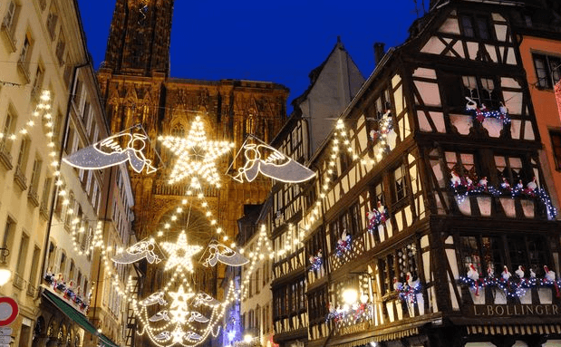

Marché de Noël de Strasbourg
Chaque année, deux millions de personnes viennent visiter le traditionnel marché de Noël de Strasbourg. Ce marché existe depuis 1570. Il fait partie des plus anciens et des plus grands marchés de Noël d’Europe. Il débute le premier samedi de l’Avent et s’achève, selon les années, le 24 ou le 31 décembre.
Le marché de Noël de Strasbourg a lieu chaque année sur la place de la Cathédrale et est très apprécié pour son animation et ses illuminations. C’est d’ailleurs en fin d’après-midi, lorsque la ville s’illumine que le marché est le plus agréable. Les visiteurs se promènent dans les allées bercés par les chants de Noël et les odeurs d’épices, de cannelle… On y trouve de petites échoppes dans lesquelles on vend des décorations de Noël : des guirlandes, des boules de Noël en verre, des étoiles…
Les produits artisanaux proposés sur le marché doivent respecter les traditions alsaciennes. On peut y déguster la choucroute et la tarte flambée alsacienne, le vin chaud fait au vin blanc d’Alsace, la bière d’Alsace, les fameux pains d’épices de Mireille Oster ainsi que des gâteaux typiquement alsaciens : les bredeles.
Certaines animations destinées aux enfants sont gratuites. Elles sont proposées au village des Enfants sur la place Saint-Thomas.
Les heures d’ouverture du marché de Strasbourg varient selon les jours. En semaine, il est ouvert de 10h à 20h. Le samedi, il est ouvert jusqu’à 21 heures. Le 24 décembre, le marché ferme à 18 heures.
Si vous avez l’intention de visiter l’Alsace au mois de décembre, il faut savoir que Strasbourg n’est pas la seule ville d’Alsace qui propose un marché de Noël. En effet, les marchés de Noël de Mulhouse, Colmar, Munster ou encore Sélestat sont aussi très appréciés des visiteurs.

(Recuerda que las respuestas deben escribirse en francés)
Envoyer
Retour